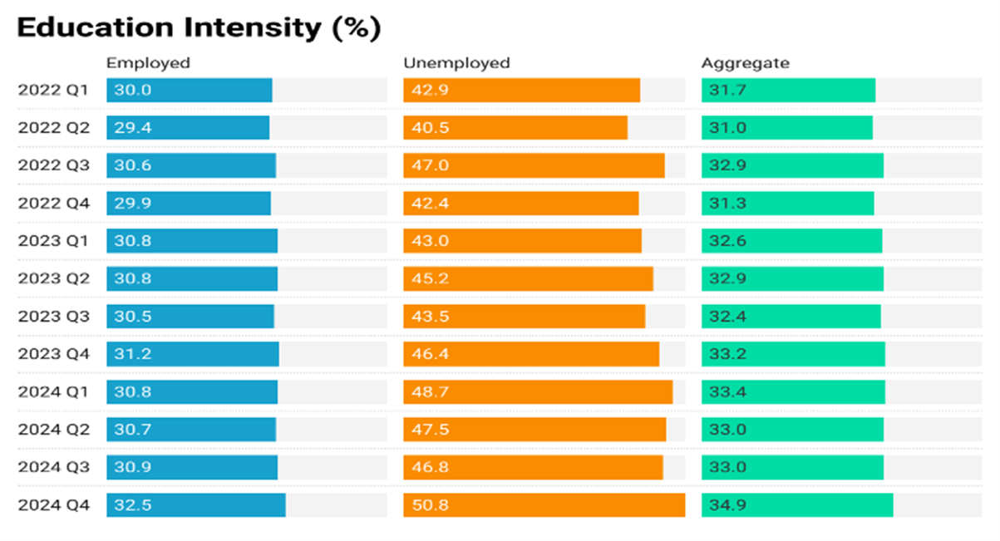
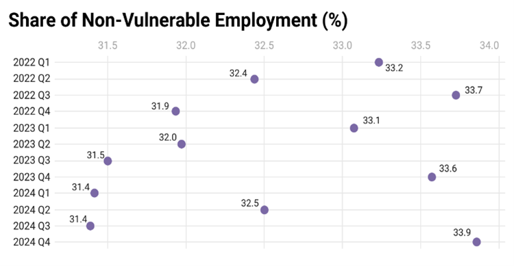
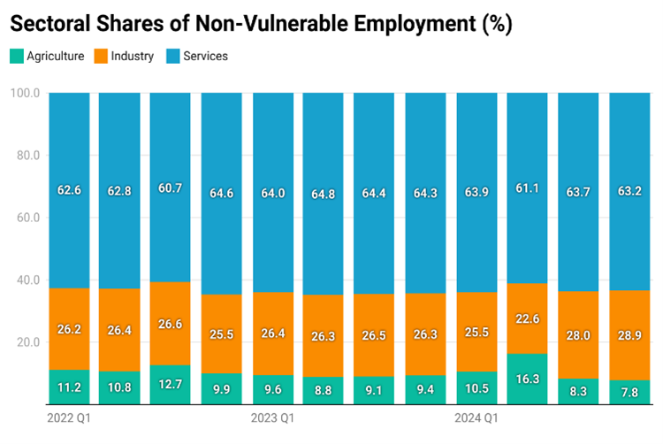
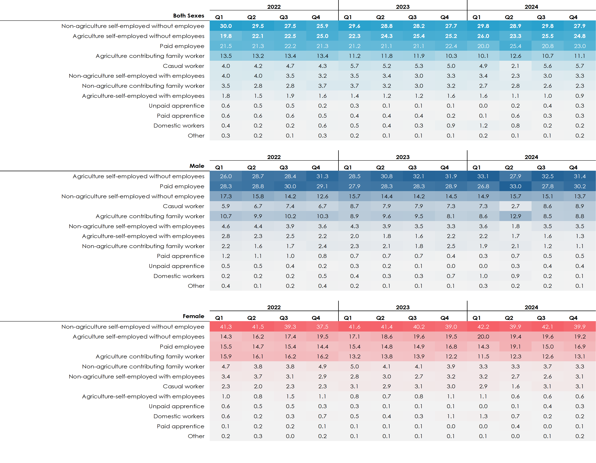
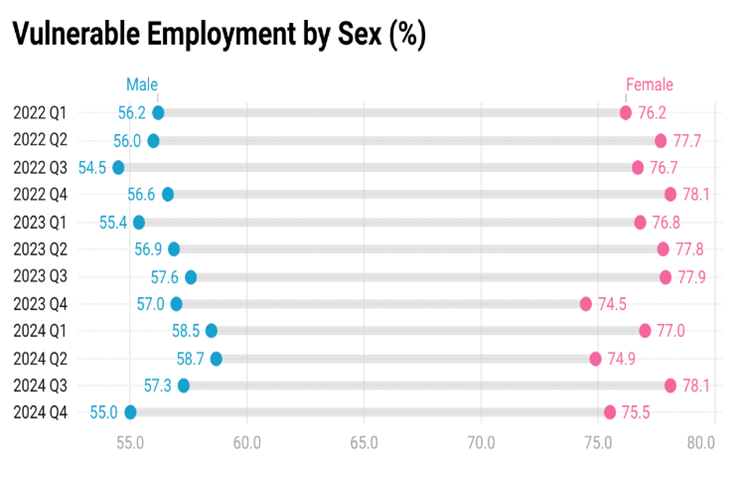

Enhancing Education Intensity for Productive and Quality Employment in Ghana
Published: August 26, 2025 | By Johnson Worlanyo Ahiadorme
Ghana's labour force has become more educated, yet this progress is unevenly distributed.
Gains are more pronounced among the unemployed than the employed, while job creation remains
concentrated in low-productivity sectors. Self-employment dominates—especially among women—
heightening vulnerability and exposure to poverty.
This post explores recent labour market trends and what must change to ensure that education
translates into productive and decent employment.
A More Educated Workforce—But Uneven Gains
Between 2022 and 2024, the share of Ghana’s labour force with at least secondary education
rose from 31.7% to 33.6%.
Unemployed: education increased by over 5 percentage points
Employed: increase was less than 2 percentage points
This suggests that educated individuals are not being absorbed into productive jobs.

Figure 1: Education Intensity of the Labour Force
Declining Quality of Employment
The share of non-vulnerable employment declined from 32.8% in 2022
to 32.3% in 2024, indicating a shift toward lower-quality jobs.

Figure 2: Non-Vulnerable Employment
Sectoral distribution shows strong imbalance:
Services: 63.4%
Industry: 26.2%
Agriculture: 10.4%

Figure 3: Sectoral Shares of Non-Vulnerable Employment
The Dominance of Self-Employment
Only about 20% of workers are in paid employment
Roughly 5% are employers
More than two-thirds are own-account or family workers
These jobs are typically associated with low incomes and limited social protection.

Figure 4: Status in Employment by Sex
A Stark Gender Divide
Over 60% of women are own-account workers
Men dominate paid employment (29%) and employer roles (5.6%)
Women's vulnerable employment exceeds men's by 20 percentage points

Figure 5: Vulnerable Employment by Sex
Women face significantly higher exposure to economic shocks due to concentration
in vulnerable employment.
Why This Matters
Youth unemployment exceeds 22% (Q2 2024)
Rising risk of underemployment among educated workers
Potential GDP gains of 1–2% if employment gaps are addressed
What Needs to Change
1. Align Education with Market Needs
Expand TVET and STEM training
Strengthen industry partnerships
2. Promote Productive Job Creation
Scale up YEA, NEIP, and 24‑Hour Economy initiatives
Invest in industrialisation and agro-processing
3. Formalise the Informal Sector
Support SMEs to expand and formalise
Improve access to finance
4. Close Gender Gaps
Support women’s entrepreneurship
Provide childcare and social support
5. Strengthen Labour Market Data Systems
Improve Labour Market Information Systems (LMIS)
Conclusion
Ghana’s increasing education levels present an opportunity for transformation,
but current trends risk trapping talent in vulnerable employment.
The path forward is clear: align skills with demand, create quality jobs,
and ensure inclusion—especially for women.